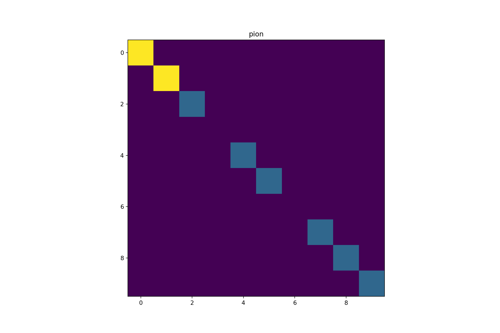
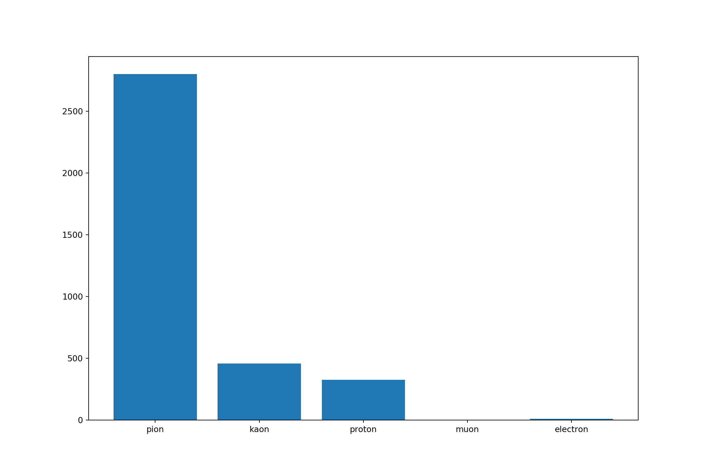
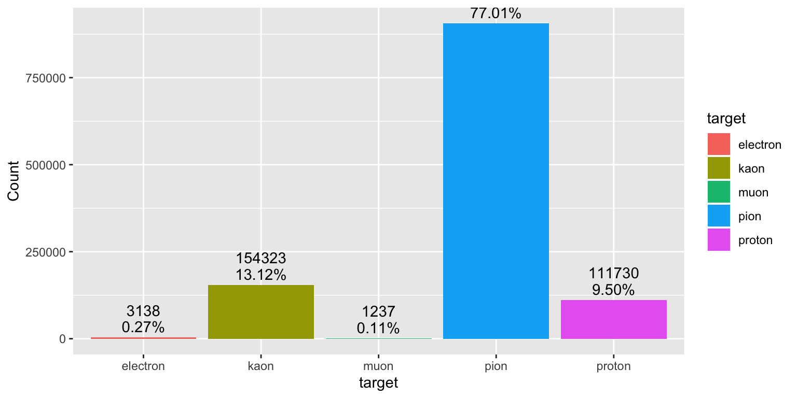
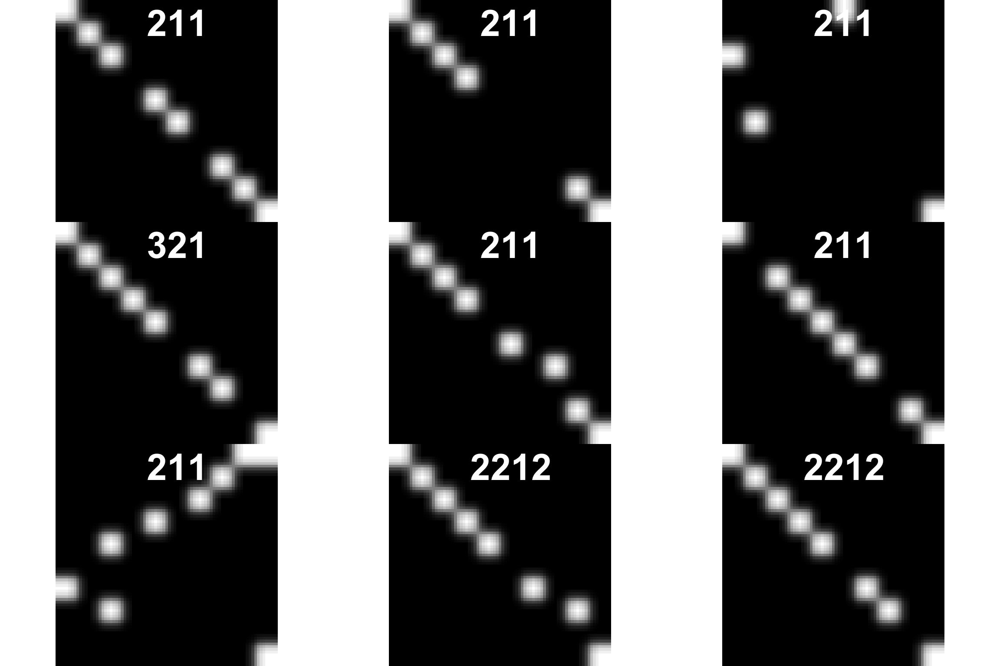
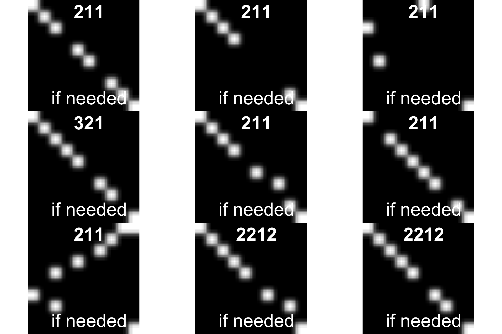
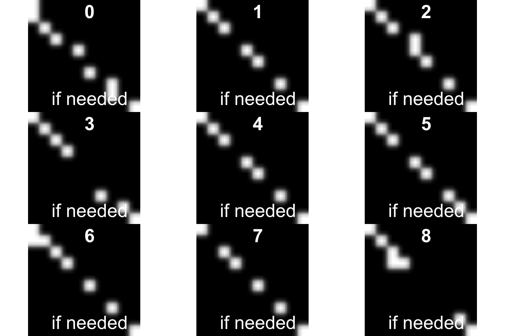

Particle Classification after collision (from Python env to R)
Karim Mezhoud
2020-01-20

This challenge is part of an effort to explore the use of machine learning to assist high energy physicists in discovering and characterizing new particles. Particles are the tiny constituents of matter generated in a collision between proton bunches. Physicists at CERN study particles using particle accelerators. The goal of this challenge is to build a machine learning model to read images of particles and identify their type.
1 Kaggle kernels
2 Setting python version and anaconda environment for R
3 Python starter code given by the organizer
cirtaChallenge.ipynb is a starter python notebook. It shows us how to open and view a .pkl file and starts you off with a simple classifier.
3.1 Import modules
3.2 Load an example of event
# replace by your own file path
pkl_file = open("download/event1.pkl", 'rb')
event1 = pickle.load(pkl_file)
print("shape of event1[0]: ",np.shape(event1)[0])3.3 Example of a particle

3.4 Distribution of particles in an event

4 R code
4.1 Function to load .pkl file from python to R
4.2 Load R packages
FALSE
FALSE Attaching package: 'dplyr'FALSE The following objects are masked from 'package:stats':
FALSE
FALSE filter, lagFALSE The following objects are masked from 'package:base':
FALSE
FALSE intersect, setdiff, setequal, unionFALSE
FALSE Attaching package: 'data.table'FALSE The following objects are masked from 'package:dplyr':
FALSE
FALSE between, first, lastFALSE
FALSE Attaching package: 'EBImage'FALSE The following object is masked from 'package:data.table':
FALSE
FALSE transposeFALSE
FALSE Attaching package: 'xgboost'FALSE The following object is masked from 'package:dplyr':
FALSE
FALSE slice4.3 Explore event format
4.4 Convert image matrix to vecteur in dataframe
# mat2vec <- function(path, w = 10, h = 10){
# ## Define empty df
# df <- data.frame(matrix(ncol = 1 + (w * h), nrow = 0))
# ## Set names. The first column is the classes, the other columns are the pixels.
# colnames(df) <- c("target", paste0("V", c(1:(w*h) )))
#
# tmp <- py$read_pickle_file(path)
#
# ## fill df by row
# ## increment each 2
# for(i in seq(1,length(tmp), by= 2)){
#
# df[i,] <- c(label = tmp[[i+1]], tmp[[i]] %>% as.vector())
#
# }
# ## remove all NA rows
# df <- df %>% filter_all(all_vars(!is.na(.)))
# return(df)
# }
met2vec <- function(path){
tmp <- py$read_pickle_file(path)
lsvec <- lapply(tmp[1,], function(x) as.vector(x))
target <- as.data.frame(unlist(tmp[2,]))
names(target) <- "target"
var <-as.data.frame( do.call(rbind, lsvec))
return(cbind(target, var))
}
system.time(event_1 <- met2vec("download/event1.pkl"))
#system.time(event_1bis <- mat2vec("download/event1.pkl"))
#identical(event_1, event_1bis)
#event1_2 <- lapply(list("download/event1.pkl", "download/event2.pkl"), function(x) mat2vec(x))met2vec function is faster!
4.5 Classes distribution
library(scales)
# 11: "electron"
# 13: "muon"
# 211: "pion"
# 321: "kaon"
# 2212: "proton"
train %>%
mutate(target = as.factor(target)) %>%
group_by(target) %>%
summarise(Count = n()) %>%
mutate(target = ifelse(target == 11, "electron",
ifelse(target == 13, "muon",
ifelse(target == 211, "pion",
ifelse(target == 321, "kaon", "proton"))))) %>%
ggplot()+
aes(x = target, y = Count, fill= target) +
geom_col()+
geom_text(aes(label = percent(Count/sum(Count))), vjust = -0.5)+
geom_text(aes(label = Count), vjust = -2)
- Here we note umbalanced training classes. We need to weight each class
5 Weigths compute
train %>%
group_by(target) %>%
summarise(Count = sum(target)) %>%
mutate(weight = min(Count)/Count) %>%
mutate(ratio = Count*100/sum(Count)) %>%
mutate(percentage = percent(Count/sum(Count))) %>%
mutate(label = ifelse(target == 11, "electron",
ifelse(target == 13, "muon",
ifelse(target == 211, "pion",
ifelse(target == 321, "kaon", "proton")))))
weights <- train %>%
group_by(target) %>%
summarise(Count = sum(target)) %>%
mutate(weight = min(Count)/Count) %>%
mutate(weight2 = 1 + Count * 0.01) %>%
mutate(target = ifelse(target == 11, 0,
ifelse(target == 13, 1,
ifelse(target == 211, 2,
ifelse(target == 321, 3, 4))))) %>%
# mutate(label = ifelse(target == 0, "electron",
# ifelse(target == 1, "muon",
# ifelse(target == 2, "pion",
# ifelse(target == 3, "kaon", "proton")))))%>%
select(target, weight) %>%
as.data.frame()
weights[weights["target"] == 1,2]5.1 plot images from event
#display(event1[[1,10]])
par(mfrow=c(3,3))
for(i in 1:9){
graphics::plot(EBImage::as.Image(event1[[1,i]]))
title(main = event1[[2,i]], col.main="white", cex.main=4)
}
5.2 Plot image from train dataset
vec2img <- function(df, nrow, w= 10, h = 10, main = "if needed", xlab = "if needed"){
i <- EBImage::Image(as.numeric(df[nrow,]))
dim(i) <- c(w, h, 1)
#i <- EBImage::resize(i, w= w, h= h)
plot(i)
title(main = main, xlab = xlab ,cex.main = 4, cex.sub = 0.75, col.main="white", col.lab = "white", cex.lab = 4)
}
par(mfrow=c(3,3))
for(i in 1:9){
vec2img(train[-1], i, main = train[i,1])
}
5.3 Explore test data
5.4 Convert test data to dataframe
convert_test <- function(df){
test_like_event <- t(do.call(rbind, df))
lsvec <- lapply(test_like_event[2,], function(x) as.vector(x))
target <- as.data.frame(unlist(test_like_event[1,]))
names(target) <- "target"
var <- as.data.frame( do.call(rbind, lsvec))
test <- cbind(target, var)
return(test)
}
test <- convert_test(test)
test %>% head(20)
fwrite(test, file = "test.csv")
5.5 Explore submission file
6 Preprocessing
Convert labels to numeric values
unique(train$target)
# 11: "electron"
# 13: "muon"
# 211: "pion"
# 321: "kaon"
# 2212: "proton"
## The class must be from 0 to n class. We need to convert target
Train <- train %>%
mutate(target = ifelse(target == 11, 0,
ifelse(target == 13, 1,
ifelse(target == 211, 2,
ifelse(target == 321, 3, 4))))) %>%
mutate(weight = ifelse(target == 0, weights[weights["target"] == 0,2], # 0.466
ifelse(target == 1, weights[weights["target"] == 1,2], # 1
ifelse(target == 2, weights[weights["target"] == 2,2], # 0.000841
ifelse(target == 3, weights[weights["target"] == 3,2],
weights[weights["target"] == 4,2]))))) %>% # 0.000325, 0.0000651
select(target, weight, everything())
Train %>% head(20)7 Split train and valid datasets
tmp <- rsample::initial_split(Train, prop = 3/4)
train_ <- rsample::training(tmp)
valid <- rsample::testing(tmp)
y_train <- as.integer(train_$target)
w_train <- train_$weight
x_train <- train_ %>% select(-target, -weight)
y_valid <- as.integer(valid$target)
w_valid <- valid$weight
x_valid <- valid %>% select(-target, -weight)